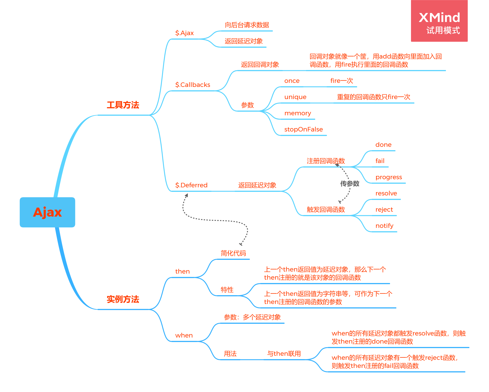
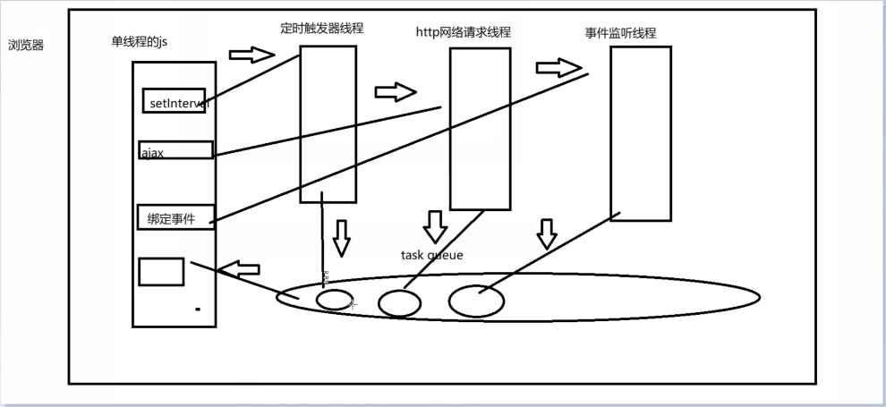

一、思维导图

二、工具方法Ajax
参数 obj
属性及属性值
url: 'https://open.duyiedu.com/jq/person' |
- 返回延迟对象
三、工具方法Callbacks
3.1 JS异步回调机制
- JS单线程，异步编程优化体验，防止阻塞页面，异步部分向执行队列传递信息需要回调函数

3.2 基本逻辑中的回调机制
函数的参数：当一个状态结束之后执行的函数，如运动函数中的回调函数
$.Callbacks
$.Callbacks()返回回调对象，回调对象相当于一个大筐，里面放一些你想要回调的处理函数
参数：”once” “memory” “unique” “stopOnFalse”
“once”：只能fire一次
“memory”：将回调对象内的处理函数一次性都fire出来，即使处理函数是在fire后添加的（相当于将所有处理函数记下来之后再执行）
“unique”：去重，fire时回调对象内重复的函数只执行一次
“stopOnFalse”：停止，fire时想要在哪个函数停止，就在哪个函数里面加上return false
add：向回调对象中添加回调处理函数
fire：
执行回调对象中的处理函数
可以给回调对象的处理函数传参
3.3 Ajax中的回调机制
- Ajax中的回调函数底层是用$.callback()实现的
四、工具方法Deferred
- $.Deferred
- 该方法返回一个延迟对象
- 注册回调函数的方法
参数为函数，函数可以接收resolve,regect,notify传来的参数
done：注册成功的回调函数
fail：注册失败的回调函数
progress：注册正在进行的回调函数
- 触发回调函数的方法
可以传多个参数
resolve：触发成功的回调函数，
regect：触发失败的回调函数
notify：触发正在进行的回调函数
如果done和fail的回调函数被触发，那么异步操作立刻停止，如果progress回调函数被触发，那么会继续执行
可以链式调用
让回调函数只在异步操作内部触发，在外部不能触发的方法
思路：在一个函数内部用$.Deferred的方法生成一个延迟对象，让该函数返回一个只有注册回调函数功能的延迟对象
方法：
return df.promise()
注意：Ajax的回调函数实际上是由$.callback()实现$.Deferred()实现的
五、实例方法then
简化注册回调函数的写法
链式调用
用法一：如果返回值不是延迟对象，前一个then的返回值是下一个then的参数，下一个then绑定的还是原来的延迟对象
用法二：如果返回值是延迟对象，下一个then绑定的事件就是这个延迟对象
六、回调地狱
- 回调地狱：回调函数内部嵌套Ajax请求，在代码书写上形成三角区
七、回调地狱的优化
优化回调地狱开头用立即执行函数
只优化Ajax内的回调函数 –> 实例方法then
优化一个多功能函数 –> 例如事件绑定 + Ajax请求 –> 工具方法Deferred + 实例方法then
八、实例方法when
写法：
when(df1,df2,df3).then(function(){},function(){})参数：一个或多个延迟对象
返回值：promise对象
延迟对象df1,df2,df3都触发resolve，那么会触发then注册的done回调函数，若有一个触发reject，那么会触发then注册的fail回调函数
九、回调地狱方法与when方法的对比
回调地狱方法解决的是 层层依赖关系的Ajax请求
when解决的是 平等关系的Ajax请求